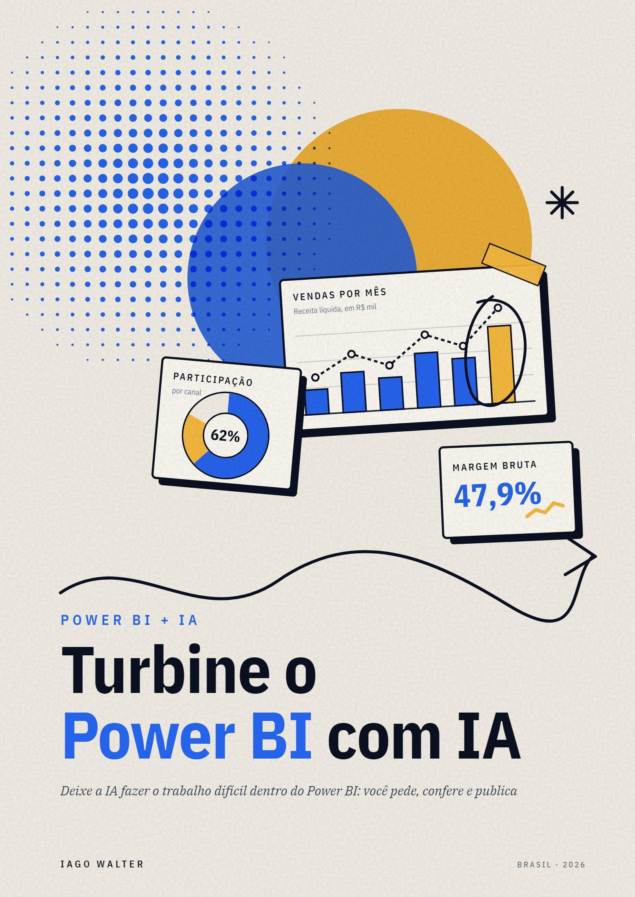

Deixe a IA fazer o trabalho difícil dentro do Power BI: você pede, confere e publica.

Responda com sinceridade, só para você. São quatro perguntas que o seu chefe costuma fazer.
A IA trabalha rápido e erra. O livro organiza o trabalho para você ganhar a velocidade sem entregar um número que ninguém conferiu.
Cada capítulo abre com a sua própria ilustração. Clique para ver o que você vai ter no fim dele.
14 capítulos, anexos e um guia rápido de dez passos para quem já sabe o básico e quer começar logo.
Gestão comercial, com dados fictícios. É a base do capítulo do primeiro relatório.
O relatório já montado, para você comparar com o seu resultado.
Manuais prontos para a IA: DAX, modelagem em estrela e design de relatório.
Não. Você escreve pedidos em português e confere os resultados. O vocabulário esperado é o de quem já usa Power BI: tabela, medida, filtro, relatório.
O Power BI Desktop e os editores citados são gratuitos. Os modelos de IA têm plano gratuito com limites ou assinatura paga, e os valores mudam com frequência: confira na página de cada fornecedor. Para publicar e compartilhar relatórios, o Power BI exige uma licença (o livro explica qual).
Erra, e o livro parte disso. Um capítulo inteiro mostra onde ela costuma errar, como provar que o número está certo e como ajustar sem a IA.
Depende das regras da sua TI. O capítulo 4B mostra o caminho para empresas com GitHub corporativo, o que pedir à TI e o que fazer se a empresa não liberar.
Depois do pagamento na Kiwify, você acessa o livro em PDF e os arquivos que o acompanham (planilha, modelo .pbit e skills).
Elas mudam rápido, e o livro avisa isso logo no começo. Cada passo traz o que você deve ver e o que fazer se a sua tela for diferente, e o método de pedir por etapas e conferir os números vale mesmo quando um menu muda de lugar.
Você tem garantia de 7 dias, com reembolso pela própria Kiwify.